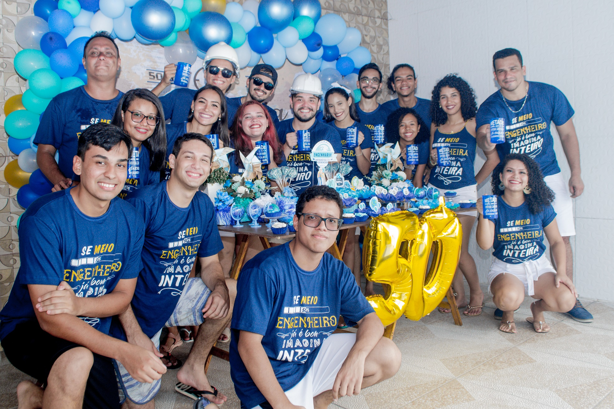
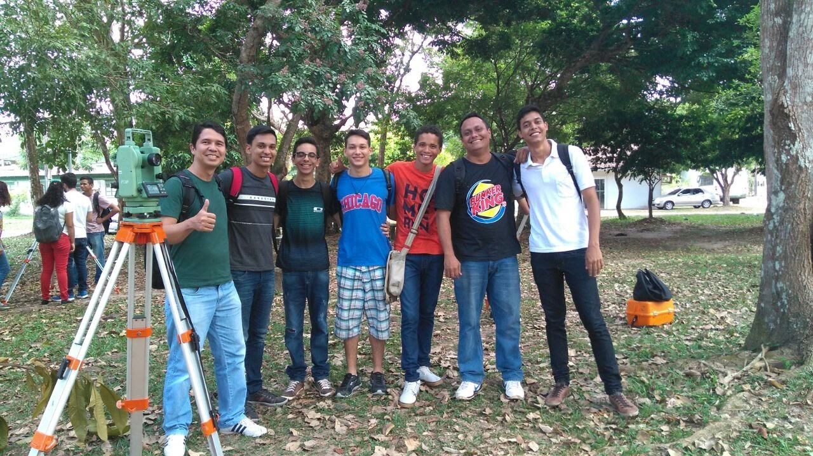
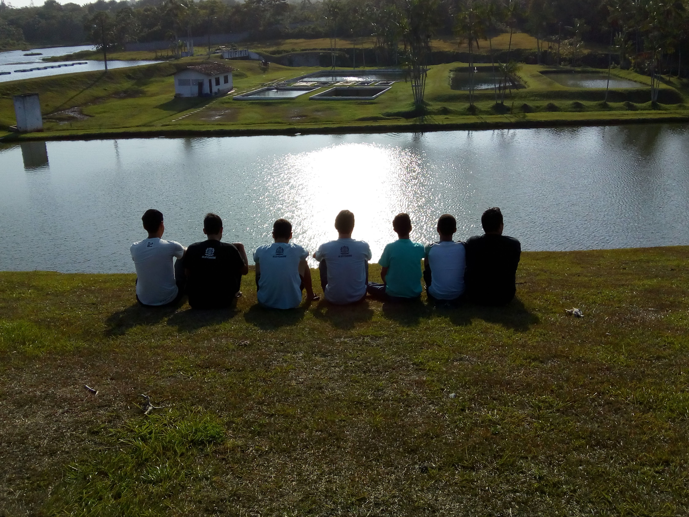
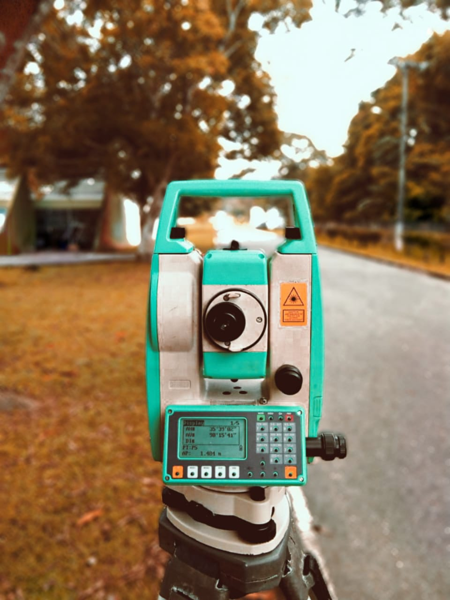
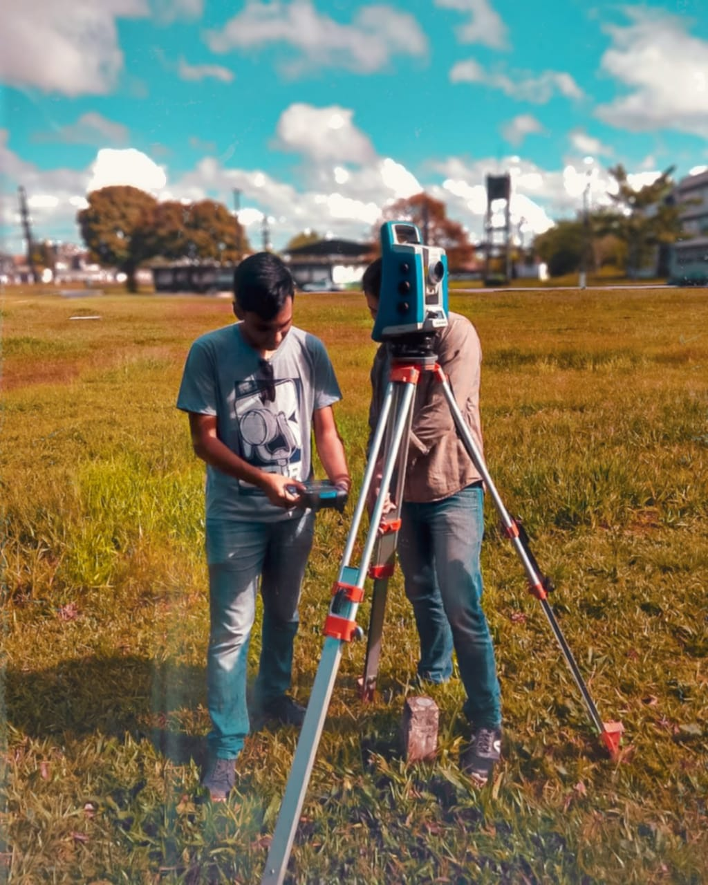
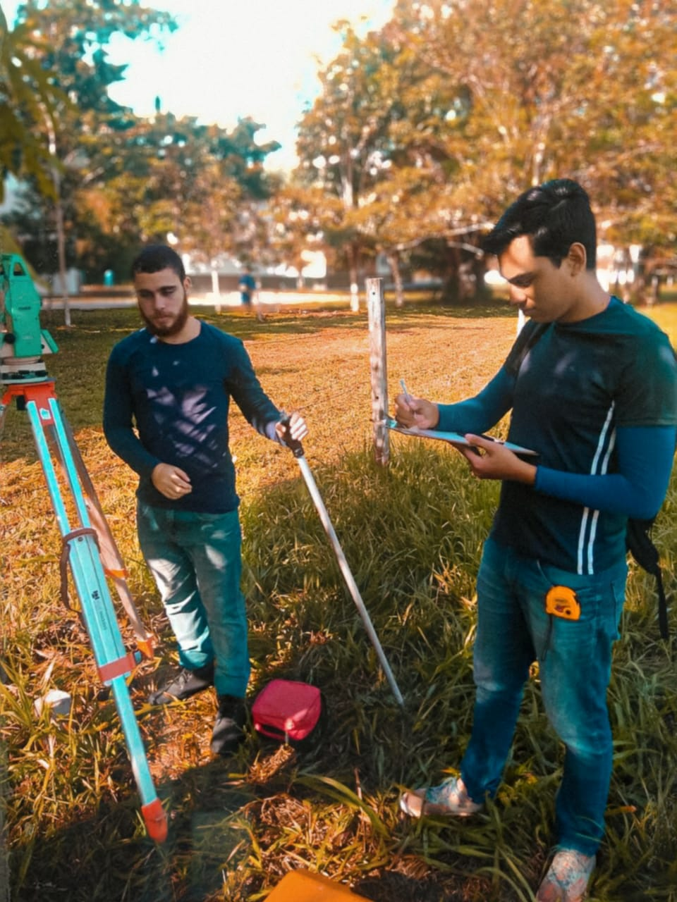
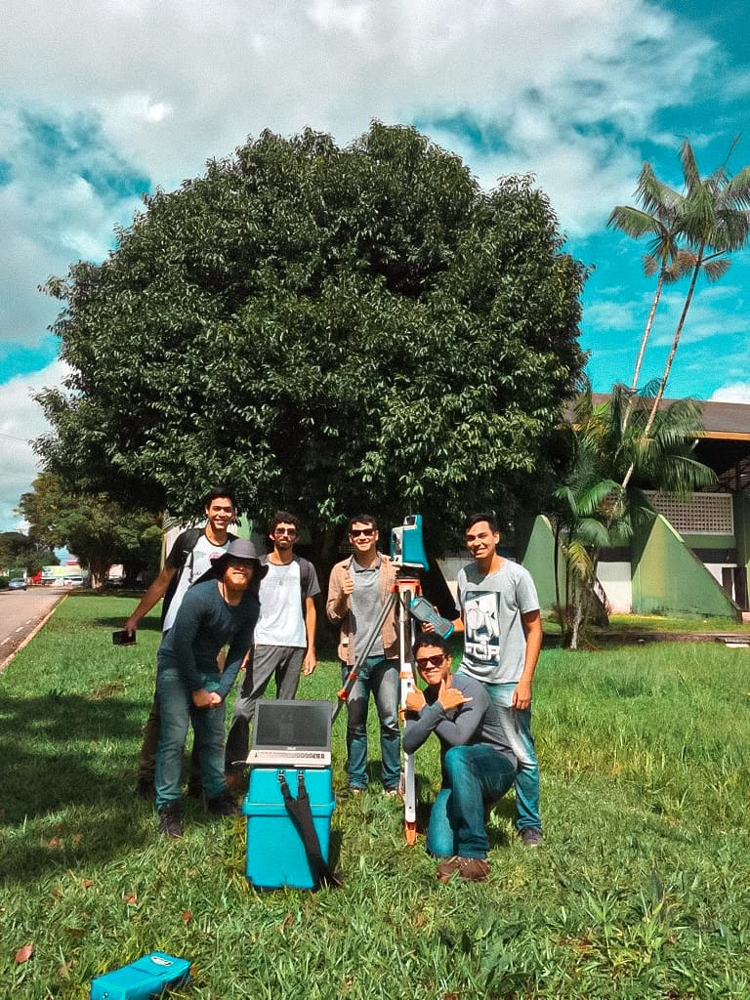
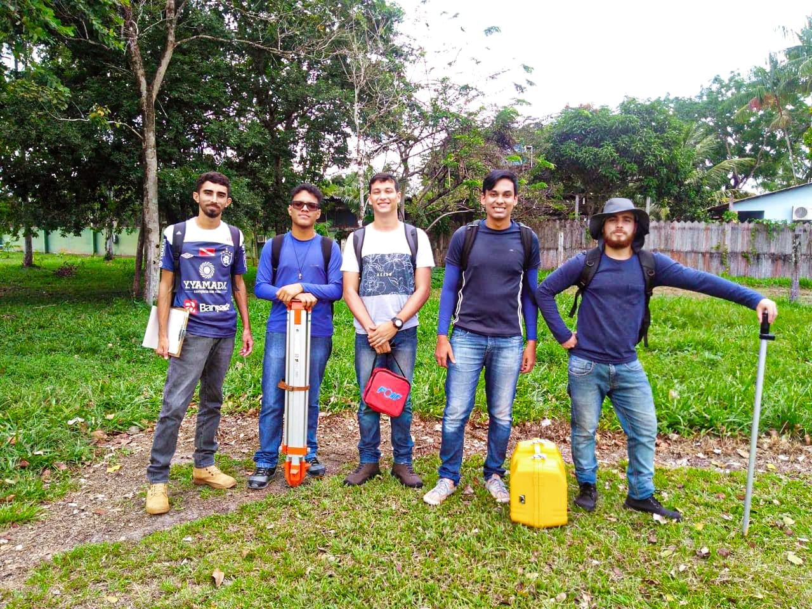

Turma de e.c.a. 2017 comemora a festa de 50%
A turma de 2017 (5º turma de E.C.A. da Ufra) promoveu a comemoração da sua festa de 50% de conclusão de curso. Ao todo, o curso tem duração de 10 semestres (5 anos), assim como outras engenharias.

Foto: Pauliane
Equipe X-men
Foto de aula inaugural da disciplina de Introdução a Engenharia Cartográfica e de Agrimensura (2017).

Foto: facebook
Fazenda Escola de Castanhal (FEC) da Ufra
Visita técnica a Fazenda Escola de Castanhal (FEC) da Ufra (2017).

Foto: John Mathew
Estação Total Ruide
Levantamento topográfico no início da Ufra.

Foto: Luana Nascimento
Estação Robótica Foif
Levantamento topográfico na área em frente ao Pavilhão de Sala de Aulas.

Foto: Luana Nascimento
coleta de informações topográficas
Coleta de informações topográficas do campo de futebol em frente ao prédio de E.A.E.R.

Foto: Luana Nascimento
Equipe geotopo
Equipe GEOTOPO utilizando a Estação Robótica.

Foto: Luana Nascimento
Equipe geotopo
Equipe GEOTOPO realizando trabalho prático da disciplina de Topografia II.

Foto: Luana Nascimento